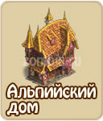

Получено: файл; исходный URL. Первая иллюстрация строки каталога; авторство не подтверждено. Идентичность изображения при замене домена не проверена. Страница: источник.
Альпийский дом
браузерная версия; платформа и дата редакции не установлены- Тип
- Постройка
- Версия и дата
- браузерная версия; платформа и дата редакции не установлены
Данные по источнику · браузерная версия; платформа не установлена · дата редакции списка не установлена
Предварительно: Прочитан список. Имена файлов пиктограмм приводятся как есть: они не гарантируют идентификацию материала. Alt-атрибуты источника содержат ошибки. Отдельная статья и дата не проверены.. Требуется сверка.
- Сведения из списка, включая имена файлов пиктограмм
- [рисунок: alpiyskiy.jpg] 1 500 000 монет Стадии строительства: 1. 20 [рисунок: kafel.jpg] + 10 [рисунок: Hrustal.jpg] + 05 [рисунок: batareyka.jpg] 2. 10 [рисунок: poroh.jpg] + 25 [рисунок: Nog_dlya_bumagi.jpg] + 05 [рисунок: vata.png] 3. 10 [рисунок: milo.jpg] + 15 [рисунок: ugol.jpg] + 20 [рисунок: Lepestki_rozy.jpg] Даёт возможность: Превращать одни бесплатные подарки в другие: 1. 05 [рисунок: Kaplya_vody.png] = 05 [рисунок: Snegok.png] + 00 1 [рисунок: Ogon.jpg] 2. 01 [рисунок: steklo.jpg] = 01 [рисунок: vremya1.jpg] + 500 [рисунок: moneti.jpg] 3. 01 [рисунок: vremya1.jpg] = 01 [рисунок: mir.png] + 500 [рисунок: moneti.jpg]
Данные по источнику · браузерная игра, платформа не уточнена · 17.04.2015
Предварительно: Прочитана отдельная историческая статья; условия могут зависеть от версии. Независимость от других сайтов не установлена.. Требуется сверка.
- Доступ
- 25 уровень, 1 500 000 монет, 500 опыта за покупку.
- Стадии
- 1: 20 кафеля + 10 хрусталя + 5 батареек, 150 опыта; 2: 10 пороха + 25 ножей для бумаги + 5 ваты, 200 опыта; 3: 10 мыла + 15 угля + 20 лепестков розы, 250 опыта.
- Производство
- Капля воды из снежка и огня; стекло из времени и монет; время из мира и монет. Точные количества в статье не указаны.


Данные по источнику · историческая браузерная игра, площадка не указана · 15.07.2012 — дата публикации; дата редакции неизвестна
Предварительно: Сопоставлено по единственному точному названию; различные версии или одноимённые объекты могут различаться. Названия файлов и alt пиктограмм сохранены как подписи, не заменяют проверенную расшифровку; изображения и цены требуют ручной сверки. Независимость от zombi-ferma.ru и других сайтов не установлена.. Требуется сверка.
- Текст и пиктограммы источника
- [изображение: m_bavaria.png] Купить за: 1500000 Продать за: 150000 Опыт за покупку: 500 СТАДИИ СТРОИТЕЛЬСТВА: 1 стадия, 20 [изображение: s_tile.png] +10 [изображение: s_sphree.png] +5 [изображение: s_battery.png] 2 стадия, 10 [изображение: s_powder.png] +25 [изображение: s_knife.png] +5 [изображение: s_cotton.png] 3 стадия, 10 [изображение: s_soap.png] +15 [изображение: s_coal.png] +20 [изображение: s_rose_petals.png] Описание: В Альпийском доме можно превращать одни бесплатные подарки в другие. После 3 стадии можно создавать: 5 [изображение: s_waterdrop.png] =5 [изображение: s_snowball.png] +1 [изображение: s_fire.png] 1 [изображение: s_glass.png] =1 [изображение: s_hourglass.png] +500 [изображение: s_coins.png] 1 [изображение: s_hourglass.png] =1 [изображение: s_peace.png] +500 [изображение: s_coins.png]
Связанные сущности
нет проверенных связей — требуется сверка.